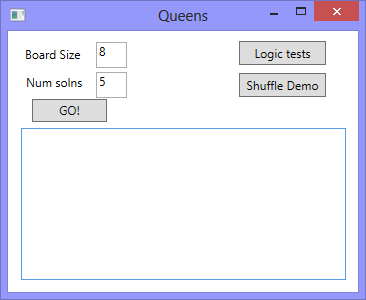
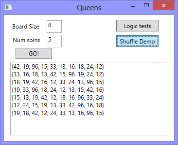
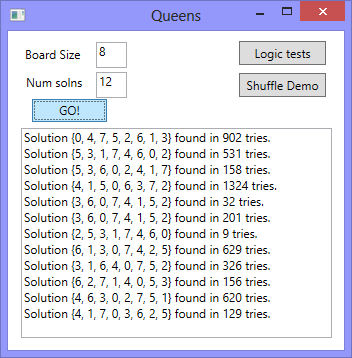

20. The N-Queens Puzzle — a Case Study¶
As told by Wikipedia, “The eight queens puzzle is the problem of placing eight chess queens on an 8x8 chessboard so that no two queens attack each other. Thus, a solution requires that no two queens share the same row, column, or diagonal.”

Please try this yourself, and find a few more solutions by hand.
We’d like to write a program to find solutions to this puzzle. In fact, the puzzle generalizes to placing N queens on an NxN board, so we’re going to think about the general case, not just the 8x8 case. Perhaps we can find solutions for 12 queens on a 12x12 board, or 20 queens on a 20x20 board.
20.1. Getting Started¶
How do we approach a complex problem like this? A good starting point is to think about our data structures — how exactly do we plan to represent the state of the chessboard and its queens in our program? Once we have an initial idea about how our puzzle is going to be represented in memory, we can begin to think about the methods and logic we’ll need to solve it, i.e. perhaps we’ll need a way to put another queen onto the board somewhere, or to check whether a specific queen clashes with any of the other queens on the board.
The steps of finding a good representation, and then finding a good algorithm to operate on the data cannot always be done independently of each other. As you think about the operations you require, you may want to change or reorganize the data somewhat to make it easier to do the operations you need.
This relationship between algorithms and data was elegantly expressed in the title of a book Algorithms + Data Structures = Programs, written by one of the pioneers in Computer Science, Niklaus Wirth, the inventor of Pascal.
Let’s brainstorm some ideas about how a chessboard and queens could be represented in memory.
A two dimensional 8x8 array or a list of lists is one possibility. At each square of the board we would like to know whether it contains a queen or not — just two possible states for each square — so perhaps each element could be a boolean, or, more simply, 0 or 1.
Our state for the solution pictured above could then have this data representation: [1].
[1] Notice that we’re not using C# syntax here — it is a bit easier and cleaner without C#.
1 2 3 4 5 6 7 8
bd1 = [[0,0,0,1,0,0,0,0], [0,0,0,0,0,0,1,0], [0,0,1,0,0,0,0,0], [0,0,0,0,0,0,0,1], [0,1,0,0,0,0,0,0], [0,0,0,0,1,0,0,0], [1,0,0,0,0,0,0,0], [0,0,0,0,0,1,0,0]]
You should also be able to see how the empty board would be represented, and you should start to imagine what operations or changes you’d need to make to the data to place another queen somewhere on the board.
Another idea might be to keep a list of coordinate positions of where the queens are currently placed. Using the notation in Wikipedia’s illustration at the start of this chapter, for example, we could represent the state of that solution as:
1
bd2 = [ "a6", "b4", "c2", "d0", "e5", "f7", "g1", "h3" ]
We could make other tweaks to this — perhaps each element in this array should rather be an x,y pair, with integer coordinates for both axes. And being good computer scientists, we’d probably start numbering each axis from 0 instead of at 1. Now our representation could be:
1
bd3 = [(0,6), (1,4), (2,2), (3,0), (4,5), (5,7), (6,1), (7,3)]
Looking at this representation, we can’t help but notice that the first coordinates are
0,1,2,3,4,5,6,7and they correspond exactly to the index position of the pairs in the array. So we could discard them, and come up with this really compact alternative representation of the solution:1
bd4 = [6, 4, 2, 0, 5, 7, 1, 3]
This is what we’ll use: a simple 1-dimensional array (or list) of int. Let’s see where that takes us.
This representation is not general
We’ve come up with a great representation for the N-Queens problem. But will it work for other puzzles?
Our simple 1-dimensional array has the limitation that we can only put one value in each position, which means we’ll never be able to represent a board with two queens in the same column. But that is a puzzle constraint anyway — no two queens are allowed to share the same column. So puzzle and data representation are well matched.
But if we were trying to solve a different puzzle on a chessboard, perhaps play a game of checkers, where many pieces could be in the same column, our one-dimensional array representation would not be general enough.
Let us now take some grand “Aha!” insight into the problem. Is it just a coincidence
that there are no repeated numbers in the solution? The solution [6,4,2,0,5,7,1,3]
contains the numbers 0,1,2,3,4,5,6,7, but none are duplicated! Could other
solutions ever contain duplicate numbers, or not?
A little thinking should convince you that there can never be duplicate numbers in a solution: the numbers represent the row on which the queen is placed, and because we are never permitted to put two queens in the same row, no solution can have duplicate row numbers in it.
Our key “Aha!” insight
In our chosen representation, every solution to the N queens problem must therefore be a permutation of the numbers [0 .. N-1].
Not all permutations are solutions. For example, [0,1,2,3,4,5,6,7] has all
queens on the same diagonal, so it is not a solution. But all solutions are permutations.
Wow, we seem to be making progress on this problem merely by thinking, rather than coding!
Our algorithm can start taking shape now. We can start with an array containing values [0..N-1], generate various permutations of the array, and check each permutation to see if it has any clashes (queens that are on the same diagonal). If it has no clashes, we have found a solution, and we can output it.
Let us be precise and clear on this issue: if we only use permutations of the rows, and we’re using our compact representation, no queens can clash on either rows or columns, and we don’t even have to concern ourselves with testing those cases. So the only clashes we need to test for are clashes on the diagonals.
It sounds like a useful method will be one that can test if two queens share a diagonal.
Each queen is at some (x,y) position. So does the queen at (5,2) share a diagonal with the one at (2,0)? Does (5,2) clash with (3,0)?
A little geometry will help us here. A diagonal has a slope of either 1 or -1. The question we really want to ask is is their distance between them the same in the x and the y direction? If it is, they share a diagonal. Because diagonals can be to the left or right, it will make sense for this program to use the absolute distance in each direction:
If you copy the code and run it, you’ll be happy to learn that the tests pass!
Let’s put together a little GUI now so that we have some scaffolding from which to run our tests, or to show our solutions. This GUI is mostly self explanatory: some labels and text boxes for input, a couple of buttons to run some tests, and a text box for showing the results that we’re interested in. We’ll set up the results text box to stretch when the window resizes, and we can set its property to give it a vertical scroll bar.
One way to check all queens for any clashes is to work through the board, left-to-right, and checking each queen against all those to its left. For example, when we consider the queen on column 6, it is enough to check for clashes against those in all the columns to its left, i.e. in columns 0,1,2,3,4,5. (Convince yourself that no queen needs to check any queens to its right.)
So the next building block is a method that can check whether the queen at
column c clashes with any of the queens to its left, at columns 0,1,2,..c-1:
The tests can go behind the button called “Logic tests” in our GUI.
Here is our method that makes them all pass:
Finally, we’re going to give our program one of our permutations — i.e. all queens placed somewhere, one on each row, one on each column. But does the permutation have any diagonal clashes?
And the code to make the tests pass:
Summary of what we’ve done so far: we now have a powerful method called boardHasDiagonalClashes
that can tell if a permutation is a solution to the queens puzzle. Let’s get on now with generating
lots of permutations and finding which of them happen to be solutions!
20.2. Shuffling an array¶
Before we return to the Queens problem, we’ll need a method that shuffles an array of integers into a random order. C# provides a built-in method that can sort a pair of two “parallel” arrays. The first array contains keys (to be used for the comparisons), and the second array contains associated data. So, if we had keys [30, 10, 20] and data [“Joe”, “Zim”, “Abe”] we can do the paired-array sort and the arrays would be changed to [10, 20, 30] and [“Zim”, “Abe”, “Joe”]. So the relationship between the i’th elements (between the 10 and “Zim”) in the paired arrays is preserved.
Our shuffling strategy is to create a new key array of the same length as the items, and to fill it with random numbers. Then we can use the built-in C# method to sort the pair of arrays on the keys. This will randomly shuffle the item array.
Effectively each value in the array xs is paired to a randomly generated int (the key). When the randomly generated keys are sorted into an ascending order in line 9 it results in the array, xs, being sorted into a random order (ie. randomly shuffled). We’ve chosen to put the random number generator outside of the method, as a class-level variable, so it only gets instantiated once.
Well, here our unit testing strategy breaks down. We don’t have an easy way to automatically check that the shuffle is working because its output cannot be predicted from its inputs. It turns out that testing and verifying random processes is a complex task — people expend a great deal of effort attempting to show that the random numbers are not predictable.
For our purposes, a handler like the following will probably be enough to convince us that each time we click the button we get a different shuffle of the array.
Repeated events gave us output like this, but of course each time we run it we’d expect different results:

20.3. Putting it all together¶
This is the fun part where we get to see some results of all our hard work.
We could try to find all permutations of [0,1,2,3,4,5,6,7]
— that might be algorithmically challenging, and would be a brute force way of tackling the
problem. We just try everything, and find all possible solutions.
Of course we know there are N! permutations of N things, so we can get an early idea of how long it would take to search all of them for all solutions. Not too long at all, actually - 8! is only 40320 different cases to check out. This is vastly better than starting with 64 places to put eight queens. If you do the sums for how many ways can you choose 8 of the 64 squares for your queens, the formula (called N choose k where you’re choosing k=8 squares of the available N=64) yields a whopping 4426165368, obtained from (64! / (8! x 56!)).
What is the most significant thing in this chapter?
Our earlier important insight — that we only need to consider permutations — has reduced what we call the problem space for the 8x8 Queens problem from about 4.4 billion cases to just 40320!
Good algorithms and good programs are not just about neat lines of code. Here we took advantage of a very simple representation for our boards, and had a pretty deep insight into the properties that any solution needed to possess.
We’re not even going to explore all 40320 permutations, however. Instead we’re going to write a “random” algorithm to find solutions to the N queens problem. We’ll begin with the permutation [0,1,2,3,4,5,6,7] and we’ll repeatedly shuffle and test the array, looking for a solution! Along the way we’ll also count how many shuffle/test attempts we need before we stumble across the next solution. (We could find the same solution more than once, because our shuffling will be random!).
And now we get ...

Here is an interesting observation. On an 8x8 board, there are known to be 92 different solutions to this puzzle. By shuffling, we are randomly picking one of 40320 possible permutations of our representation. So our chances of picking a solution on each try are 92/40320. Put another way, on average we’ll need 40320/92 tries — about 438.26 random shuffles — before we stumble across a solution. The number of tries we showed here looks like our experimental data average should be quite close to that, so our experimental data agrees quite nicely with our theory!
We’ll leave it as an exercise to you, the reader, to repeatedly find solutions and work out the average number of tries needed for different size boards. Perhaps leave your computer running overnight, and see if you can find some solutions to a 24x24 board.
Save this code for later.
Later in the course we’ll want to draw the boards.
20.4. Exercises¶
Modify the queens program to solve some boards of size 4, 12, and 16. What is the maximum size puzzle you can usually solve in under a minute?
What is the average number of shuffles you’d expect to have to get for a 10x10 puzzle before you stumbled across a solution? What about bigger puzzles? Wikipedia can tell you how many solutions exist for different size boards, so you can compute the expected number of tries quite easily.
Add some logic to find and display the average number of tries needed to find N solutions. So when the GO! button is clicked asking for 20 solutions, say, compute the average number of tries for finding those 20. Compare this experimental data to the theoretical prediction.
Adapt the queens program so that we keep a list of solutions that have already been found, so that we don’t find the same solution more than once. (This may be trickier than it first appears: we’ll need to be able to compare two boards to tell if their array elements are identical, but there is no built-in comparison in C# that can test an array for element-by-element equality.)
Chess boards are symmetric: if we have a solution to the queens problem, its mirror image — either flipping the board on the X or on the Y axis, or on a diagonal, is also a solution. And rotating a solution by 90 degrees, 180 degrees, or 270 degrees gives more solutions. In some sense, solutions that are just mirror images or rotations of other solutions — in the same family — are less interesting than the unique “core cases”. Of the 92 solutions for the 8 queens problem, there are only 12 unique families if you take rotations and mirror images into account. Wikipedia has some fascinating stuff about this.
Write a method to mirror a solution in the Y axis (i.e. given
[0,4,7,5,2,6,1,3], produce[3,1,6,2,5,7,4,0]).Write a method to mirror a solution in the X axis.
Write a method to rotate a solution by 90 degrees anti-clockwise, and use this to provide 180 and 270 degree rotations too.
Write a method which is given a solution, and it generates the family of symmetries for that solution. For example, the symmetries of
[0,4,7,5,2,6,1,3](not C# syntax, again) are[[0,4,7,5,2,6,1,3],[7,1,3,0,6,4,2,5], [4,6,1,5,2,0,3,7],[2,5,3,1,7,4,6,0], [3,1,6,2,5,7,4,0],[0,6,4,7,1,3,5,2], [7,3,0,2,5,1,6,4],[5,2,4,6,0,3,1,7]]
Now adapt the queens program so it won’t output solutions that are in the same family. Only show solutions from unique families.